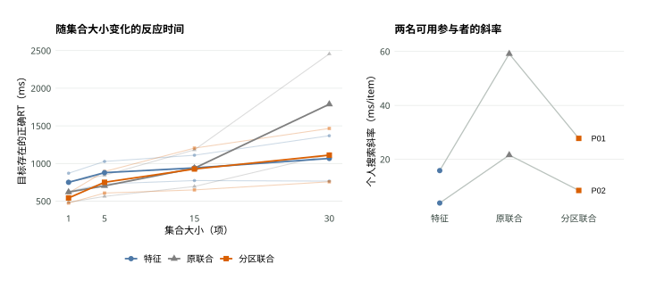
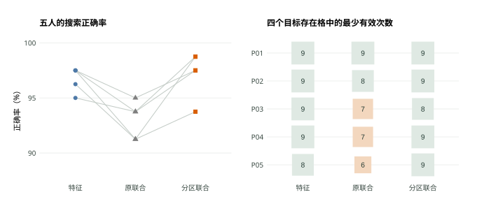
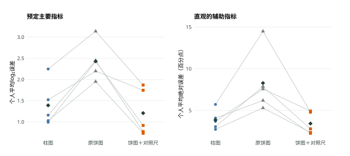
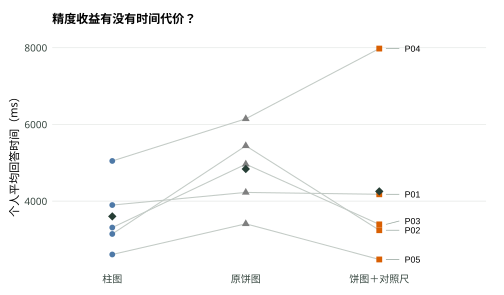
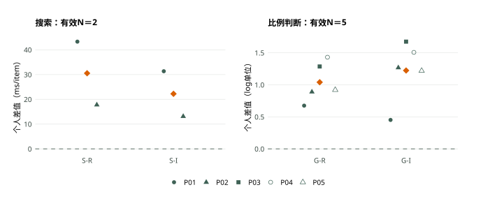

注意有迹 · 工程心理学作业二 · 2026年11月9日固定快照
排列方式和共同基线，
能让判断更容易吗？
两个经典实验的浏览器适配复现与改进
搜索的两名可用参与者都呈现了预期方向，但证据还很有限。比例判断中，五人的柱图和辅助饼图误差都低于原饼图；这一小样本模式值得保留，尚不足以作稳定的总体推断。
样本齐了，可用人数仍要分开算
研究者共招募5名他人，以P01–P05记录。同一人完成两个实验，各有240次搜索判断、60次比例估计，共1500条正式试次。练习和程序测试未进入分析。没有收集年龄、性别等人口学信息，也没有事后补填。参加前须知情同意；搜索还需自报能分辨统一的蓝、橙、紫红三色，这项确认只说明本人觉得任务可做。
最终CSV和JSON的1500条试次、30000个试次字段一致。10条范式记录对应5个会话，无重复正式记录；协议均为attention-v1.1，均指向收数前版本89c427c。原始刺激可由记录中的种子重新生成并与试次核对。完整备份在本地保留，公开页面只用匿名汇总。
本报告将最终导出的P01–P05作为同一研究样本。样本范围较收数前草案作了调整；试次质量标准、主指标和四项比较保持原定口径，各项有效人数分别报告。
| 参与者 | 搜索试次 | 搜索主分析 | 图形有效判断 / 60 |
|---|---|---|---|
| P01 | 240 | 可用 | 60 |
| P02 | 240 | 可用 | 60 |
| P03 | 240 | 原联合 / 30项：7次有效正确 | 60 |
| P04 | 240 | 原联合 / 30项：7次有效正确 | 59 |
| P05 | 240 | 原联合 / 30项：6次有效正确 | 60 |
搜索每个目标存在格预定10次，至少8次有效正确RT才可估计主斜率。P03–P05的同一格未达门槛，两项搜索主对比均缺失；其余试次保留作描述。P04辅助饼图有1次失焦，剔除该次后19/20次有效，仍达16次门槛。
搜索共有4次超时、0次失焦、0次小于150ms的提前反应；1148/1200次为有效正确反应。图形判断有1次失焦、0次超时，299/300次有效。所有人的整体搜索正确率都高于60%。缺失主斜率的原因是局部条件格正确反应不足，不能用整体高正确率代替该门槛。
我们具体改了什么
两个实验分别对应W6视觉搜索和W7显示设计。每个实验都先比较经典条件，再增加一个可实际操作的改进条件。问题、预测、清洗口径于2026年11月8日22:31提交，早于最早一人的知情同意时间23:33；Git快照和记录中的40位版本号一致。
| 实验 | 经典比较 | 改进条件 | 预定差值；预测均＞0 |
|---|---|---|---|
| 搜索 | 特征目标 vs 联合目标 | 联合目标不变，按颜色空间分区 | S-R＝原联合斜率−特征斜率 S-I＝原联合斜率−分区联合斜率 |
| 比例判断 | 柱图 vs 饼图 | 饼图增加共同基线对照尺 | G-R＝原饼图log误差−柱图log误差 G-I＝原饼图log误差−辅助饼图log误差 |
搜索：保留任务，只调整空间组织
依据Treisman和Gelade（1980）的Experiment I，橙色T与蓝色X作干扰项。特征条件寻找紫红色字母或S，联合条件寻找蓝色T，回答有无目标。每条件包含集合大小1、5、15、30，目标存在和不存在各10次，共80次；三条件240次。分区联合与原联合共享坐标、目标位置和字母、颜色计数，只改变非目标项目的空间组织。
特征整合理论（FIT）与子集搜索研究提示，按颜色聚集可能让人先选出相关子集，再确认字母。我们因此预测分区降低联合搜索斜率（Treisman & Gelade, 1980；Theeuwes, 1996）。分区也改变了局部邻近关系，本实验无法把分组、拥挤和策略逐一拆开。
比例判断：给角度比较加一条长度参照
依据Cleveland和McGill（1984）的位置—角度任务，每图5个值，标出最大项X，估计指定项A相当于X的百分之几。每条件20张独立图，共60次；三条件匹配比率和大小排序，五值数据不完全重复。辅助条件保留饼图，将A、X另画为共同起点的两条长度，不显示答案数字。按原研究的图形感知解释，位置和长度比较有望减轻角度估计负担。
两实验均为被试内设计，顺序由匿名编号分配：3人先搜索、2人先判断，每实验覆盖六种条件排列中的五种。练习为每个搜索条件6次、每个图形条件3次，共27次，可重练。搜索注视1000ms、刺激最长5000ms；图形最长30000ms。程序用performance.now()记录反应时间，并标记页面失焦。未测量各设备的真实显示延迟。
比较按人配对，条件格不足就保留缺失
搜索主指标只用目标存在、正确、未超时或失焦、150–5000ms的RT。每人每条件先算四个集合大小的均值，再拟合RT随集合大小变化的线性斜率。各格须至少8次有效正确反应，且整体正确率至少60%。图形主指标沿用原文的log₂(|估计百分数−真实百分数|＋0.125)，先逐次计算，再求每人的条件均值；每条件至少16个有效判断。大误差不作为删数据的理由。
各差值报告均值、SD和2500次被试级bootstrap百分位区间，种子固定为比较编号。N≥5时作双侧精确配对符号翻转检验，四项统一Holm校正；检验依赖差值的对称性／符号可交换性假设。五人时即使差值全同向，双侧最小p也只能到0.0625。试次数不增加独立被试数，本文不把1500条记录当作1500个人。
搜索：两人的方向一致，结论暂时停在这里
在符合预定规则的P01、P02中，原联合搜索的斜率都高于特征搜索，也高于分区联合搜索（图1）。平均原联合−特征差为30.54 ms/item，原联合−分区差为22.23 ms/item。两人呈现了预期模式，人数不足以支撑稳定的复现或改进结论。

原研究表1的目标存在斜率为特征3.1、联合28.7 ms/item；本样本两人的对应均值为9.81、40.35 ms/item。联合更陡的方向一致，绝对数值不完全相同。原实验使用速示器和大量练习，本项目改用浏览器，统一替换了配色，也缩短了练习，数值不能当作严格等效检验。

把五人的准确率作为辅助描述，分区比原联合平均高4.25个百分点，五人均同向；并未出现平均准确率下降的表面代价。但五人的正确RT差并不一致，其中两人在分区条件反而更慢。这个辅助结果不能填补三人缺失的主要斜率，也不足以宣布搜索改进已被验证。
比例判断：误差下降比较一致，时间收益因人而异
五名参与者的柱图、辅助饼图误差都低于原饼图，两项配对差值全部为正（图3）。柱图与原饼图的比较回答经典效应是否出现，原饼图与辅助饼图的比较回答对照尺是否有帮助。以下分析均按这五人等权汇总。

原饼图−柱图的平均log误差差为1.04，95%CI为0.81至1.28；原饼图−辅助饼图为1.22，95%CI为0.82至1.53。换成直观的绝对误差，对照尺平均减少4.85个百分点。两项双侧精确p均为0.0625，四项族Holm校正后均为0.250，未达到0.05。
bootstrap区间没有跨0和精确检验未达显著可以同时出现：它们采用不同计算方式，且五人的重采样分布很离散。当前可以说这五人都呈现了预期方向，不能据此把区间解释为总体效果已得到确认。辅助饼图与柱图谁更好没有预定主检验，本文不另挑一个有利比较作结论。
| 条件 | 平均log误差 | 平均绝对误差（百分点） | 平均回答时间（ms） |
|---|---|---|---|
| 柱图 | 1.39 (0.52) | 3.85 (1.17) | 3602 (930) |
| 原饼图 | 2.43 (0.44) | 8.28 (3.62) | 4838 (1062) |
| 饼图＋对照尺 | 1.20 (0.55) | 3.42 (1.33) | 4254 (2167) |
各列为个人均值的M (SD)，并非把所有试次混合后的SD。log误差允许负值；百分点误差与log误差不可直接互换。

原饼图到辅助饼图，平均回答时间缩短583ms，但P04多用了约1831ms（图4）。因此，平均精度收益没有伴随平均时间增加，个体层面的代价却仍在。共同基线可能改变了判断策略，也可能让部分人花时间检查两种表达；本实验没有眼动或过程访谈来区分这些解释。
四项预测放在一起看

| 比较 | 有效N | 平均差 (SD) | 95% bootstrap CI | 原始p | Holm p |
|---|---|---|---|---|---|
| S-R 搜索复现 | 2 | 30.54 (18.05) | 17.78 至 43.30 | — | — |
| S-I 分区改进 | 2 | 22.23 (12.89) | 13.12 至 31.35 | — | — |
| G-R 图形复现 | 5 | 1.04 (0.31) | 0.81 至 1.28 | 0.0625 | 0.250 |
| G-I 对照尺改进 | 5 | 1.22 (0.47) | 0.82 至 1.53 | 0.0625 | 0.250 |
正值均符合预定方向。S项单位为ms/item，G项为log₂误差单位。所有区间按人重采样2500次；N＝2的区间只能描述这两人的重采样范围。四项属于同一Holm校正族，无法检验的搜索项仍保留在四项族的计数中。N＜5不作符号翻转检验。
这次结果能支持到哪一步
对照收数前四项预测：搜索复现和分区改进都只有两人的方向支持，证据不足；图形复现和对照尺改进均在五人中同向，呈现了预期模式，但精确检验未达显著。这里将“本样本有这一模式”和“总体效果已得到确认”分开判断。
搜索部分只在两名可用参与者身上看到联合比特征更费时、分区斜率更低的模式。原联合30项格的缺失集中在另外三人，留下的两人可能更擅长这类任务。这个选择限制很具体，不能只写一句“小样本有局限”就带过。后续若继续研究，应在新的收数前版本中增加每格试次数或重新论证质量门槛，现有数据仍按原规则保留。
比例判断与Cleveland和McGill报告的柱图优势方向一致。原文按判断单元跨人使用中均值等稳健汇总，本作业采用个人条件均值配对，不能直接把两者数值作等效比较。共同基线对照尺在五人中一致降低误差，符合位置／长度参照有助于比例比较的预期。它额外提供了冗余表达，收益可以来自使用长度线索；这项结果不能证明参与者的角度知觉本身得到改善，也不能排除多看一处信息带来的策略变化。
五人的条件顺序只近似平衡，练习、疲劳和迁移仍可能参与结果；设备与显示尺寸未统一，刺激也未作个体等亮度标定。年龄、性别和招募背景没有记录，无法判断样本代表性。当前最清楚的发现是这五人中比例判断的误差方向一致，搜索的总体复现与改进问题仍缺少足够可用数据。
附录：核验与复算
每人每条件的分析指标
| 编号 | 条件 | 主指标 | 正确率 | 正确RT / 判断RT（ms） | 绝对误差（百分点） |
|---|---|---|---|---|---|
| P01 | 特征搜索 | 15.82 | 97.50% | 1271 | — |
| P01 | 原联合搜索 | 59.12 | 95.00% | 1582 | — |
| P01 | 分区联合搜索 | 27.77 | 97.50% | 1248 | — |
| P01 | 柱图 | 1.52 | — | 3898 | 3.69 |
| P01 | 原饼图 | 2.20 | — | 4227 | 7.56 |
| P01 | 饼图＋对照尺 | 1.74 | — | 4178 | 4.92 |
| P02 | 柱图 | 2.25 | — | 3144 | 5.71 |
| P02 | 原饼图 | 3.14 | — | 5442 | 14.48 |
| P02 | 饼图＋对照尺 | 1.87 | — | 3242 | 4.80 |
| P02 | 特征搜索 | 3.79 | 97.50% | 804 | — |
| P02 | 原联合搜索 | 21.57 | 93.75% | 850 | — |
| P02 | 分区联合搜索 | 8.45 | 98.75% | 676 | — |
| P03 | 特征搜索 | 1.75 | 95.00% | 927 | — |
| P03 | 原联合搜索 | — | 93.75% | 869 | — |
| P03 | 分区联合搜索 | 11.51 | 97.50% | 911 | — |
| P03 | 柱图 | 1.16 | — | 3311 | 4.08 |
| P03 | 原饼图 | 2.44 | — | 4963 | 6.19 |
| P03 | 饼图＋对照尺 | 0.77 | — | 3394 | 2.26 |
| P04 | 柱图 | 0.99 | — | 5048 | 3.04 |
| P04 | 原饼图 | 2.42 | — | 6147 | 7.86 |
| P04 | 饼图＋对照尺 | 0.91 | — | 7977 | 2.79 |
| P04 | 特征搜索 | 5.64 | 97.50% | 1216 | — |
| P04 | 原联合搜索 | — | 91.25% | 1231 | — |
| P04 | 分区联合搜索 | 12.07 | 98.75% | 907 | — |
| P05 | 特征搜索 | 3.11 | 96.25% | 759 | — |
| P05 | 原联合搜索 | — | 91.25% | 762 | — |
| P05 | 分区联合搜索 | 3.10 | 93.75% | 814 | — |
| P05 | 柱图 | 1.03 | — | 2609 | 2.73 |
| P05 | 原饼图 | 1.95 | — | 3409 | 5.29 |
| P05 | 饼图＋对照尺 | 0.73 | — | 2479 | 2.36 |
搜索主指标为ms/item，图形主指标为log₂误差。搜索RT含目标存在和不存在的有效正确试次；主斜率只用目标存在。缺失主指标不补值。
顺序与数据时间
| 编号 | 先做 | 搜索条件顺序 | 图形条件顺序 |
|---|---|---|---|
| P01 | 搜索 | 特征搜索 → 原联合搜索 → 分区联合搜索 | 柱图 → 饼图＋对照尺 → 原饼图 |
| P02 | 图形判断 | 原联合搜索 → 分区联合搜索 → 特征搜索 | 原饼图 → 柱图 → 饼图＋对照尺 |
| P03 | 搜索 | 分区联合搜索 → 特征搜索 → 原联合搜索 | 饼图＋对照尺 → 原饼图 → 柱图 |
| P04 | 图形判断 | 特征搜索 → 分区联合搜索 → 原联合搜索 | 柱图 → 原饼图 → 饼图＋对照尺 |
| P05 | 搜索 | 原联合搜索 → 特征搜索 → 分区联合搜索 | 原饼图 → 饼图＋对照尺 → 柱图 |
数据快照：2026年11月9日19:40:56（北京时间），项目W2UGHD。最后一条记录接收于当日19:21:31；CSV、JSON导出相隔2秒，记录与试次一致。全量原件不包含在公开网站中。
分析材料
公开匿名条件汇总CSV、个人配对效应CSV、完整汇总JSON及独立核验记录。分析使用项目原有JavaScript统计核心，Python独立核验均值、斜率、SD、区间和检验，R＋ggplot2绘图。图件使用统一配色、形状和微软雅黑，提供SVG、矢量PDF及600dpi PNG。
下载链接不依赖老师平台或浏览器本机记录。原始导出带会话与设备信息，仅留本地data/raw备份及老师平台；网页不包含下载密钥。完整方法与改动见项目docs，预登记文件保留原样。
AI使用说明与作者复核
AI协助整理文献、比较方案、编程、排错、统计复算、绘图及起草文字；humanizer-chinese用于删去套话、调整句子节奏，report-doctor用于核对结论和证据是否相称。研究问题、四项预测和设计已由学生在收数前讨论确认。本文数值来自真实导出，未用模拟或体验数据补样本。2026年11月10日学生授权最终提交；数据解释与设计取舍由学生负责，AI及程序核验不替代个人理解。
参考文献
- Treisman, A. M., & Gelade, G. (1980). A feature-integration theory of attention. Cognitive Psychology, 12(1), 97–136. doi:10.1016/0010-0285(80)90005-5。方法和量级参照：Experiment I、表1，102–105页。
- Theeuwes, J. (1996). Parallel search for a conjunction of color and orientation: The effect of spatial proximity. Acta Psychologica, 94(3), 291–307. doi:10.1016/S0001-6918(96)00003-0。分组依据核查到原始摘要，其颜色×朝向操作与本项目字母操作不同。
- Cleveland, W. S., & McGill, R. (1984). Graphical perception: Theory, experimentation, and application to the development of graphical methods. Journal of the American Statistical Association, 79(387), 531–554. doi:10.1080/01621459.1984.10478080。位置—角度实验：图3、4.2–4.5节；原研究该实验分析51人、每类10图×4次判断，本项目每类20图×1次判断。